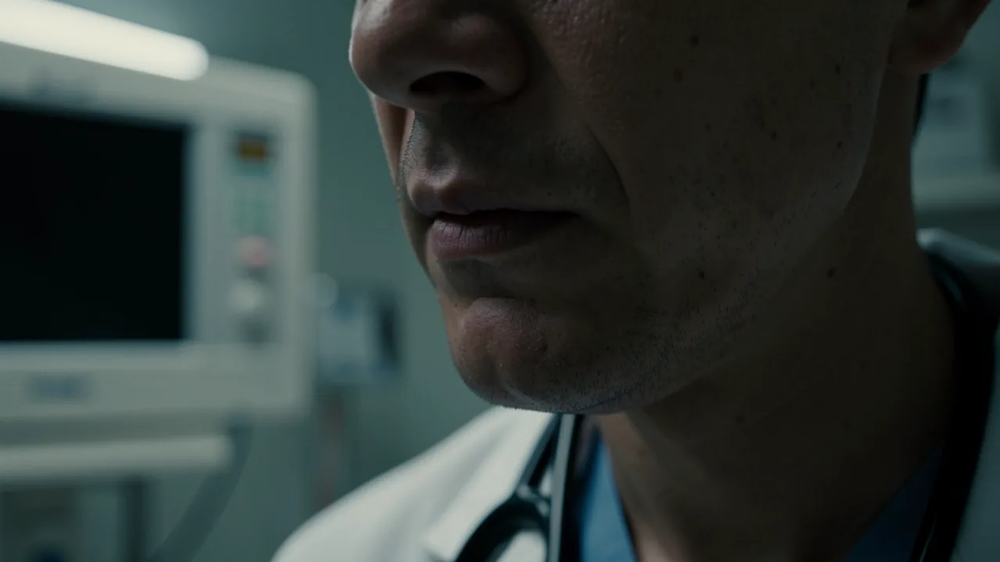
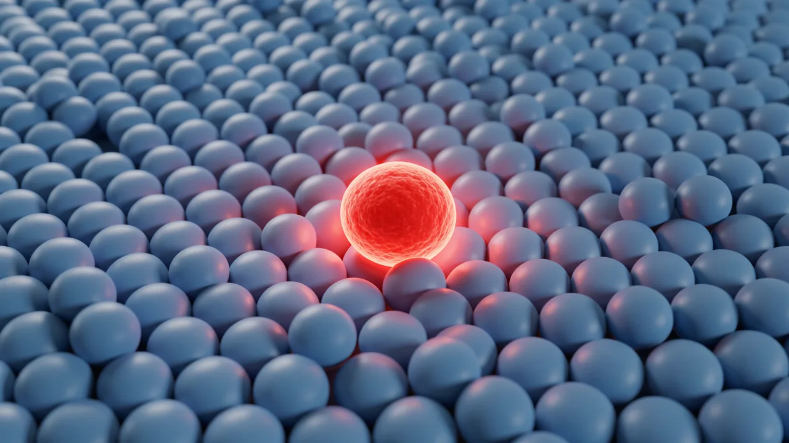

‘C’라는 단어 문제: 왜 진단이 항상 불치 판정을 의미하는 것은 아닐까요?
특정 단어들을 마치 강력한 무기처럼 취급하지만, 현대 의학에서는 그 단어가 실제로 나타내는 생물학적 현상보다 더 무섭게 느껴질 수도 있습니다.

- Medical labels can cause psychological harm disproportionate to physical risk.
- Modern science allows for detecting anomalies long before they become life-threatening.
- Nuanced communication is essential to prevent unnecessary patient trauma.
의사가 방으로 들어와 목을 가다듬고 잠시 멈춘다. 그 멈춤을 당신은 안다. 그것은 엄청난 폭발음과 같은 말을 하기 전에 찾아오는 영화 같은 정적이다. 의사가 한마디를 한다. 그 단어는 ‘C’로 시작하며, 수천 장의 헤비메탈 앨범만큼의 무게를 지니고 있다. 갑자기 당신의 모든 정체성이 새롭게 정의된다. 당신은 더 이상 단순한 ‘당신’이 아니다. 당신은 ‘환자’가 된다.

단 하나의 단어가 가진 무게
우리 문화에서는 특정 단어가 일종의 언어적 지뢰 역할을 합니다. 우리는 수십 년간 저예산으로 제작된 의학 드라마를 통해 의사가 '그 단어'를 사용하면 드라마가 곧 끝날 것이라고 믿도록 학습되었습니다. 이 단어는 즉각적이고 생리적인 투쟁 또는 도피 반응을 유발합니다. 심박수가 빨라지고 손바닥에 땀이 나며, 정신적으로 유언장을 작성하기 시작하거나(최소한 넷플릭스 구독을 취소해야 할지 고민합니다).
하지만 여기에는 과장된 의학 드라마 세계가 간과하는 불편한 진실이 있습니다. 생물학은 드라마의 긴장감에는 관심이 없습니다. 진단의 세포 수준에서의 현실은 종종 그 진단에 붙여진 무시무시한 설명보다 훨씬 더 복잡합니다. 우리는 지금, 놀라운 수준의 정밀한 의료 기술우리는 미세한 이상 징후를 시스템적인 문제로 발전하기 훨씬 이전 단계에서 감지할 수 있습니다. 하지만 여전히 우리 조부모 세대가 사용했던, 다소 투박한 언어적 도구를 사용하고 있습니다.
정밀함 대 당황
현대 종양학은 점점 더 다음의 측면에 초점을 맞추고 있습니다. 세포의 이상 현상 관리 단순히 침략해 온 군대에 맞서 싸우는 것 이상입니다. 비정상 세포의 존재, 즉 공포를 유발하는 요인이 실제로 기능적인 측면에서 끔찍한 '암'이라는 낙인을 받을 만한 상황이 아닌 경우가 점점 더 많아지고 있습니다. 세포가 이상하게 행동하는 것은 맞지만, 반드시 몸을 '정복'하는 것은 아닙니다.
진단을 받는 과정에서 겪는 심리적 충격은 종종 검사 결과 확인된 세포 변화로 인한 실제 임상적 위험보다 더 큰 영향을 미칩니다.
고급 미술관의 경보 장치라고 생각해보세요. 경보가 울리는 이유는 센서가 그림 근처에서 움직임을 감지했기 때문입니다. 이제 보안팀(의사들)이 달려옵니다. 혹시 도난 사건이 벌어지고 있는 걸까요? 그럴 수도 있습니다. 아니면 레이저에 부딪힌 나방일 수도 있습니다. 여기서 ‘C’라는 단어가 경보음 역할을 합니다. 매우 크고, 신경을 거슬리게 하며, 사람들의 주의를 끌려고 합니다. 하지만 경보음 자체가 범인은 아닙니다.

낙인찍기의 후유증
저위험성 세포 변화에 과도하게 무거운 용어를 사용하면 심리적 혼란이라는 2차적인 문제를 야기합니다. 진단에 따른 두려움, 자기 결정권 상실, 사회적 낙인은 신체적 질환만큼이나 심각한 영향을 미칠 수 있습니다. 결국 우리는 수술 칼 대신 망치를 들고 문제를 해결하려는 사람들에게 심리적 부담을 안겨주는 셈입니다.
이것이 우리가 언어 사용에 있어서 경솔하게 행동해야 한다는 의미는 아닙니다. 모든 것이 ‘괜찮다’고 무책임하게 말할 수는 없습니다. 하지만 ‘당신은 완전히 건강합니다’와 ‘이제 곧 끝장입니다’ 사이에는 상당한 중간 지대가 존재합니다. 바로 이 지점에서 우리가 고려해야 할 개념은 다음과 같습니다. 미묘한 뉘앙스를 담은 의학적 소통 이것이 왜 중요한가?
이 문제는 환자복을 입은 사람들만의 문제가 아닙니다. 이것은 고위험 시대에 정보를 처리하는 방법에 대한 교훈입니다. 우리는 기후 변화에서 경제 변화에 이르기까지 우리의 관심을 끌기 위해 동일한 '재앙'이라는 단어를 사용하는 '충격적인' 제목의 끊임없는 공격을 받습니다.
우리는 제목에 현혹되지 않고 근본적인 문제에 집중하도록 스스로 훈련해야 합니다. '경고'가 실제로 재앙을 알리는 것인지, 아니면 단순히 센서 보정 오류인지 판단해야 합니다. 다음에 소름 끼치는 단어를 들으면 잠시 숨을 고르고 생각해 보세요. 그 단어는 운명이 아니라 정보의 한 조각일 뿐입니다.
그러므로 다음에 끔찍한 제목을 보게 되면, 이것이 시스템적인 문제인지, 아니면 단순히 일부 세포의 과도한 활동인지 스스로에게 질문해 보세요.
- Oncology
- The branch of medicine that deals with the prevention, diagnosis, and treatment of cancer.
- Cellular aberration
- A deviation from the normal structure or function of a cell.
DeepSage 계정을 무료로 생성하여 기사를 저장하고, 퀴즈 결과를 추적하며, 매일 제공되는 주요 정보를 가장 먼저 받아보세요.